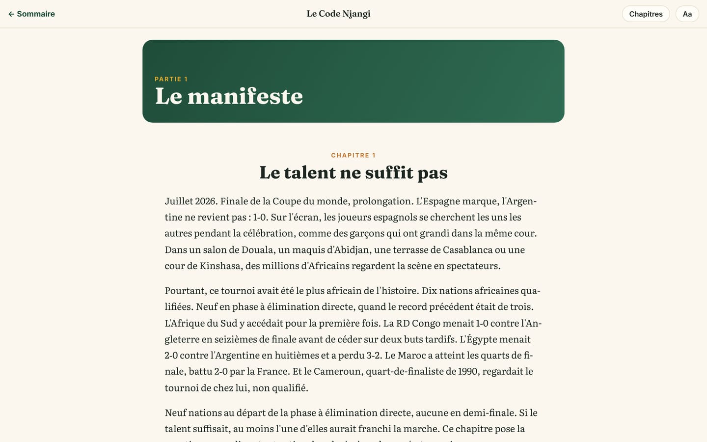

Le Code Njangi, le livre de la méthode
Le livre qui écrit le modèle de jeu de Ndamba : ses neuf parties et ses 38 chapitres, ses 64 fiches d’exercices, ses encadrés, ce qu’il donne à l’application et la manière de le lire en ligne.
9 min de lecture
Une idée de jeu qui n’est écrite nulle part s’en va avec l’entraîneur qui la porte. C’est pour cela que Ndamba a un livre en son centre : Le Code Njangi, sous-titré « Posséder avec intention : la méthode africaine pour gagner la Coupe du monde ». Écrit par William Foteping, il met noir sur blanc le modèle de jeu Njangi, du premier rondo d’un enfant jusqu’au plan de match d’une sélection. L’application, elle, aide à faire chaque jour ce que le livre explique : ses exercices, sa semaine d’entraînement et son Indice Njangi viennent de ces pages. Le livre se lit librement, en ligne, chapitre par chapitre.
Le livre en bref
Le Code Njangi est écrit en français. Le lecteur en ligne compte 38 chapitres : un avant-propos, 36 chapitres numérotés de 1 à 36 et répartis en neuf parties, puis les annexes, rangées sous le numéro 37. C’est pourquoi la page Les livres affiche « 36 chapitres » et « 9 parties » : elle compte les chapitres des neuf parties, sans l’avant-propos ni les annexes. Les 64 fiches d’exercices, chacune avec son schéma de terrain, forment le cœur de la septième partie.
La couverture résume la promesse du livre : 64 exercices, l’Indice Njangi, et deux rendez-vous, 2030 et 2034. Le sommaire se termine par la devise que tout le livre explique : « Le ballon doit voyager. Mais il doit savoir où il va. »

À qui il s’adresse
L’avant-propos nomme ses lecteurs, et ils correspondent aux profils de Ndamba :
- l’éducateur qui encadre un grand groupe d’enfants sur un terrain de terre avec peu de matériel : il y trouve des principes simples, des mots que les enfants retiennent et des exercices à installer dès la séance suivante ;
- l’entraîneur de club ou de sélection, qui a besoin d’un modèle de jeu complet : les moments du jeu, les intentions, les rôles, la semaine et la périodisation ;
- l’analyste vidéo et data, qui cherche autre chose que le pourcentage de possession ;
- le directeur technique, qui doit faire jouer de la même manière les U15, les U17, les U20, les U23 et l’équipe A ;
- le président de fédération, qui veut savoir quoi décider, dans quel ordre, et comment vérifier les effets sur le terrain ;
- les parents curieux, qui veulent comprendre ce que l’on apprend à leur enfant.
L’auteur conseille de le lire dans l’ordre la première fois, puis de s’en servir comme d’un outil : l’éducateur pressé va aux chapitres sur la formation et aux fiches, l’analyste ouvre la huitième partie, le dirigeant commence par le plan pour une fédération.
Les neuf parties et les 38 chapitres
- Avant-propos : pourquoi ce livre, pour qui, comment le lire, ses liens avec l’application et le roman.
- Partie 1, Le manifeste (le constat et l’ambition) : 1 Le talent ne suffit pas ; 2 Le Njangi : une philosophie africaine du jeu ; 3 Le mantra : 2030 ou 2034.
- Partie 2, Le modèle de jeu Njangi (le cœur de la méthode) : 4 Les quatre moments et la règle d’or ; 5 Les cinq intentions de la possession ; 6 La carte : couloirs, hauteurs, triangles ; 7 Les transitions : reprendre et regarder devant ; 8 Défendre pour récupérer ; 9 Les rôles du Njangi ; 10 Les coups de pied arrêtés avec intention.
- Partie 3, La technique au service de l’intention : 11 La passe qui sert ; 12 Recevoir et s’orienter ; 13 Voir avant de recevoir ; 14 Conduire, dribbler, protéger ; 15 Finir ; 16 Le gardien qui joue.
- Partie 4, La tactique Njangi : 17 Les systèmes avec et sans ballon ; 18 Sortir le ballon contre chaque pressing ; 19 Progresser : troisième homme, surcharges, changements de côté ; 20 Le dernier tiers : attaquer la surface ; 21 Presser : déclencheurs et pièges ; 22 Le bloc médian, le bloc bas et la défense de repos ; 23 Le plan de match.
- Partie 5, Des jeunes aux pros (cinq étapes de U6 à l’équipe A) : 24 Les étapes de la formation Njangi ; 25 Les dix compétences du joueur Njangi ; 26 Former en Afrique : notre réalité est notre force.
- Partie 6, La semaine d’entraînement et la périodisation : 27 La périodisation Njangi ; 28 Toutes les semaines : jeunes, deux matchs, sélections ; 29 La charge, la chaleur et la récupération ; 30 Construire une séance Njangi.
- Partie 7, Les exercices : 31 Comment utiliser les fiches, puis les 64 fiches.
- Partie 8, L’analyse (les quatorze codes et l’Indice Njangi) : 32 Mesurer la possession avec intention ; 33 L’analyste Njangi : avant, pendant, après le match ; 34 Le rapport de match Njangi.
- Partie 9, Le manager et la fédération : 35 Le manager, gardien de l’idée ; 36 Le plan 2030 : dix mesures pour une fédération, avec un calendrier de 2026 à 2034.
- Annexes (37) : le glossaire français et anglais, des fiches vierges de séance, de semaine et de rapport, le rappel de l’Indice Njangi.
Un mot sur le vocabulaire, car il revient partout dans Ndamba. Le livre parle des cinq intentions de la possession (Sortir, Progresser, Fixer, Finir, Respirer) et de deux réflexes sans ballon (Reprendre, Regarder devant). L’application range ces sept mots ensemble, sous le nom d’intentions, dans ses filtres et ses séances. Ce sont les mêmes mots, à l’identique : c’est voulu, car une idée commune commence par des mots communs.
Les 64 fiches d’exercices
Les fiches sont réparties en huit familles, toujours dans le même ordre :
| Famille | Codes | Ce qu’elle entraîne |
|---|---|---|
| Technique et combinaisons | C01 à C14 | Passe, contrôle, scan, protection, dribble njangi, troisième homme, finition, jeu aérien |
| Rondos | R01 à R08 | Scan, angles, toucher de balle, contre-pression |
| Jeux de position | P01 à P10 | Structure, couloirs, troisième homme, supériorités |
| Petits jeux | S01 à S08 | Décision, duels, progression en petit espace |
| Grands jeux | L01 à L06 | Largeur, profondeur, sortie sous pressing, modèle complet |
| Phases de jeu | F01 à F06 | Sortie de balle, demi-espace, bloc bas, défense de repos |
| Transitions | T01 à T06 | Reprendre et Regarder devant |
| Finition | G01 à G06 | Finir avec intention, centre en retrait |
Chaque fiche suit le même plan. En tête : le code, le titre, le sous-titre et les intentions. Puis les repères pratiques : l’âge minimum (« U10+ »), l’effectif, l’espace en mètres, la durée, les jours de la semaine où elle a sa place (de MD-4 à MD+1, ou « Jeunes ») et l’intensité. Puis le contenu : l’objectif, l’organisation, les règles, les consignes, les progressions et les régressions, ce qu’il faut mesurer, et, pour finir, une phrase qui relie l’exercice à Kaydoudou et BriBri. Chaque fiche a son schéma (l’équipe verte attaque vers la droite), et 19 fiches en ont un second pour la progression.
Dans le lecteur en ligne, chaque dessin qui bouge est une courte vidéo : les 64 fiches (et leurs progressions) et les figures des chapitres, 136 animations en tout. Au repos, le lecteur montre le schéma complet ; touchez la lecture et le mouvement se déroule, étape par étape, avec une légende pour chaque étape. Dans l’édition imprimée, chaque fiche porte un QR code en haut à droite, comme chaque figure animée des chapitres : scanné avec un téléphone, il ouvre l’animation.
Dans le texte des chapitres, un exercice est cité par son code, par exemple L04 : dans le lecteur en ligne, ce code est un lien qui ouvre la fiche.
Les encadrés du livre
Cinq sortes d’encadrés ponctuent les chapitres. Les reconnaître aide à lire vite.
- Principe Njangi : un principe clé du modèle, en quelques lignes.
- Pour l’analyste : comment mesurer ou observer ce principe.
- Avec les jeunes : l’adaptation pour les enfants et les adolescents.
- En Afrique : le contexte du continent (terrains, chaleur, moyens, diaspora).
- Attention : une erreur fréquente ou une règle de sécurité.
Une règle traverse tous les encadrés « Avec les jeunes » : de l’eau et de l’ombre, une charge adaptée à l’âge, jamais d’humiliation, une protection active de l’enfance, et l’école d’abord.
Ce que le livre donne à l’application
Les exercices
Les fiches du livre et la bibliothèque Exercices de l’application sont écrites une seule fois, dans les mêmes fichiers, en français et en anglais. Une fiche corrigée l’est donc partout. Sur la page d’un exercice, le bouton Ajouter à une séance le place dans votre séance, et Lire dans le livre ouvre la même fiche dans le lecteur. L’encadré « Avec Kaydoudou et BriBri », présent sur chaque fiche, propose Lire le roman. En sens inverse, la page d’accueil du livre se termine par le lien « Les 64 exercices dans l’application ».

L’Indice Njangi, chapitre 32
Le chapitre 32 définit l’Indice Njangi : quatorze codes simples que l’on note pendant le match (passe réussie, passe progressive, ligne traversée, entrée dans le dernier tiers, ballon repris en moins de 5 secondes, et les autres), cinq sous-indices de 0 à 20 (Progression, Pénétration, Fixation, Reprise, Contrôle) et un total sur 100. Il donne aussi la grille de lecture que l’application affiche : moins de 35, « Possession sans intention » ; 35, « Intention fragile » ; 50, « Njangi en construction » ; 65, « Njangi solide » ; 80 et plus, « Njangi de champion ». Les formules imprimées dans le livre sont celles que l’application calcule, à l’identique. Le livre précise que ses valeurs de référence sont des repères internes au Njangi, à calibrer sur ses propres matchs.
Le rapport de match le dit en bas de page : « Source : Le Code Njangi, chapitre 32. », avec le lien Lire le chapitre. Les Exercices recommandés du rapport, choisis pour les sous-indices les plus faibles, viennent du tableau de ce même chapitre. Le chapitre 13 de ce guide détaille le rapport.

La semaine, chapitre 27
La page Semaine nomme chaque jour comme le chapitre 27 : MD+1 Récupération, MD-4 Tension, MD-3 Durée, MD-2 Vitesse, MD-1 Activation, puis le jour du match. Sous « La logique de la semaine », le lien Le Code Njangi, chapitre 27 : la périodisation Njangi ouvre le chapitre. Les jours inscrits sur chaque fiche permettent de choisir l’exercice qui convient au jour (chapitre 9 de ce guide).
Et ailleurs
Le parcours du joueur reprend la grille du chapitre 25 : les dix compétences du joueur Njangi, notées de 1 à 4 (chapitre 10 de ce guide). Dans la version performance de l’espace joueur, l’auto-évaluation suit la même grille, et le questionnaire du matin renvoie au chapitre 29 sur la charge et la récupération.
Lire le livre en ligne
Le lecteur fonctionne sur téléphone comme sur ordinateur, sans compte.
- Ouvrez Les livres : dans le menu du haut du site, ou dans l’application, groupe Moi, Livres (sur téléphone, touchez Plus pour trouver le menu).
- Sous Le Code Njangi, touchez Lire en ligne. Le lien Les exercices dans l’application mène à la bibliothèque.
- Sur la page d’accueil du livre, touchez Commencer la lecture, ou un chapitre du Sommaire.
- En haut de chaque page, Chapitres ouvre la liste de tous les chapitres, avec le chapitre en cours mis en évidence ; Fermer la referme. Aa fait passer le texte par trois tailles, et le lecteur s’en souvient sur cet appareil.
- Une fine barre sous l’en-tête montre où vous en êtes dans le chapitre. En bas, Précédent et Suivant passent au chapitre voisin ; sur ordinateur, les flèches gauche et droite du clavier font de même.
- Le lecteur retient seul votre place, chapitre et position. La prochaine fois, la page d’accueil du livre affiche Reprendre la lecture avec le titre du chapitre.
- ← Sommaire ramène à la couverture et au sommaire ; depuis cette page, ← Ndamba ramène à la page des livres de l’application.


